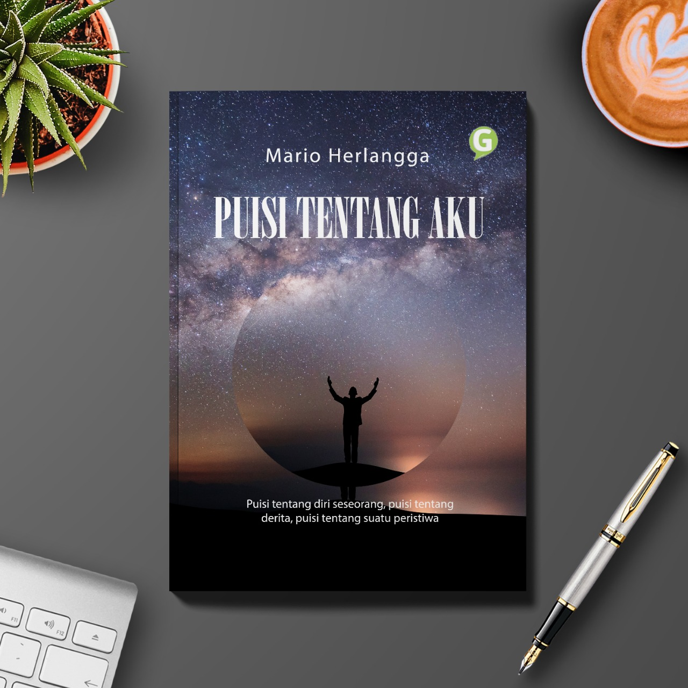

#Tentang Saya
Buku Saya I

Buku ini adalah buku pertama saya yang saya tulis karena gabut. Dari sekedar kata yang mewakili apa yang dirasakan penulis, diksi-diksi mewakili setiap kejadian-kejadian. Semua tertuang dalam rajutan sajak, yang disebut sebagai puisi. Puisi tentang diri seseorang, puisi tentang derita, puisi tentang suatu peristiwa Jika gulana menyemai hati maka puisi telah jadi, semua tangis akan lebih berarti apabila dituangkan dengan coretan pena. Galau atau patah hati lebih berharga apabila dibuatnya rangkaian sajak yang dibumbui diksi. Peristiwa akan lebih diambil makna jika terbuat puisi tentangnya, dingin serta hangat, tangis dan tawa, pula sedih atau bahagia semua akan berwarna jika dibuatnya suatu puisi. Puisi ini menceritakan tentang kehidupan penulis yang dilingkupi kegelapan yang diakibatkan oleh derita, suatu jati diri penulis yang dituangkan dalam rangkaian sajak. Bukan hanya itu, peristiwa ikut dalam kumpulan puisi ini. Kebahagiaan atau kesedihan semua diwakili oleh kata, kata akan menjawab dari nasib seorang diri, diksi akan memberi warna bagi apa yang telah terjadi pada penulis. Semua terserah pada Tuhan karena dia yang menciptakan setiap insan manusia. Hanya bisa bertasbih menyebut namanya apabila derita menggayuhku, serta curhat padanya melalui doa serta kata yang tertulis dalam lembaran hidup. Mau Beli>>>
Buku Saya II
Manusia dapat dimatikan, manusia dapat dihancurkan tetapi manusia tidak bisa dikalahkan selama ia percaya pada dirinya sendiri. Itulah pedoman mereka, pedoman TemuRose 2019/2020. Ini hanya cerita perjuangan para siswa Sub-Ngilon untuk menggapai impian menjadi warga PSHT. Banyak ilmu yang mereka dapatkan bukan hanya tentang fisik tetapi juga perihal hati. Tidak mudah menggapai impian mereka, banyak yang harus ditaklukkan termasuk diri sendiri, harus berani melawan sakit dan juga rasa malas. Bukan hal sepele untuk mengikuti perguruan yang satu ini, bukan hanya fisik yang diperlukan namun juga hati harus benar-benar murni. Dari awal sampai akhir semua terangkum di buku ini, tentang hal yang mungkin tak bisa dilakukan orang lain. Malam Kamis dan malam minggu adalah malam mereka berlagu dengan perintah lugas pelatih. Dan buku ini juga bercerita tentang yang awalnya 21 menjadi 14. Tanggal Pengesahan : 21-22 Agustus 2020. Mau Beli>>>